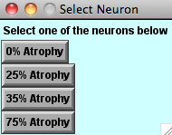
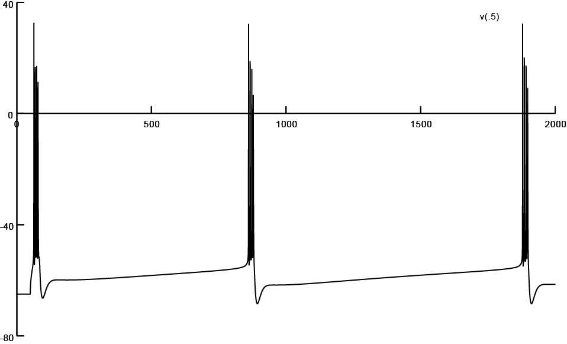
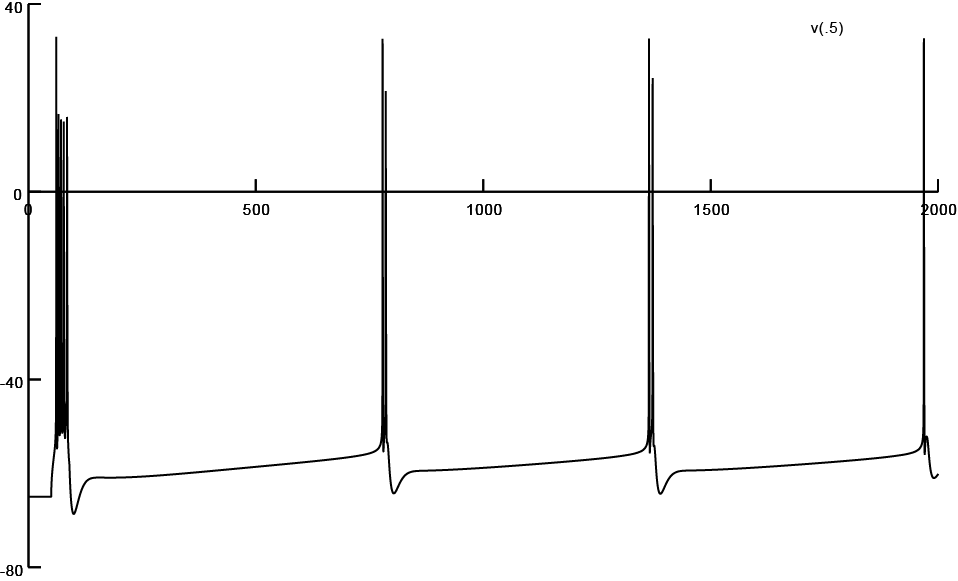
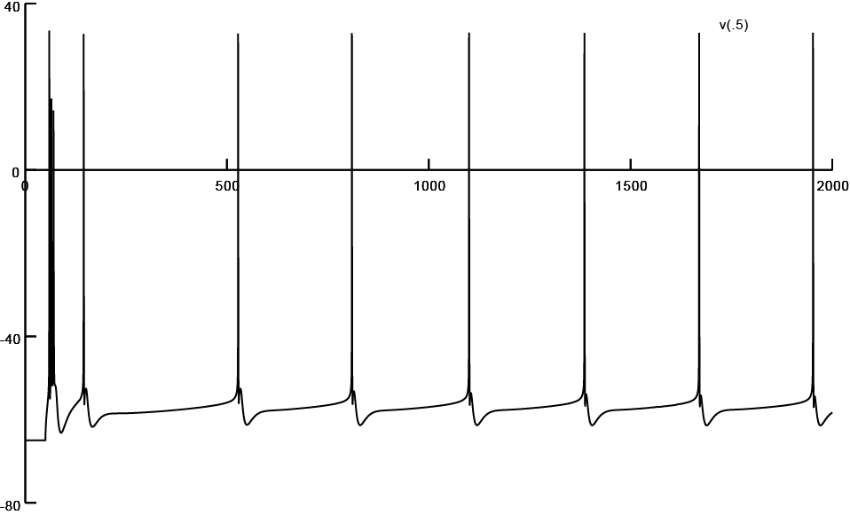
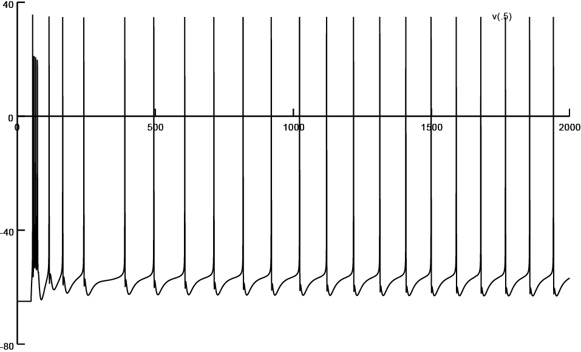

This directory contains an implementation of the following paper:
Narayanan R, Chattarji S. Computational analysis of the impact of chronic stress on intrinsic and synaptic excitability in the hippocampus. J Neurophysiol. 2010 Jun;103(6):3070-83. doi: 10.1152/jn.00913.2009. Epub 2010 Mar 24. PubMed PMID: 20457854; PubMed Central PMCID: PMC2888238.
The implementation language is NEURON. The MOD files for this implementation were taken from previous studies, and the main results of the paper above may be reproduced by using the files Fig1D.hoc, Fig2D-E.hoc and Fig2F-G.hoc. Running these programs will generate data corresponding to the figure numbers mentioned in the corresponding HOC filenames.
Implemented by Rishikesh Narayanan. Contact: rishi.n@gmail.com.
Fig1D.hoc
Running the program "Fig1D.hoc" (or "mosinit.hoc") will provide a menu as follows:

Clicking on one of these buttons will bring a projection of the 3D reconstruction associated with the corresponding morphology file. These morphology files are present in a directory named "Input", and are linked through a file named "Neurons.inp". The top four filenames there correspond to 0%, 25%, 35% and 75% atrophied neurons, but files corresponding to other % atrophies are also listed there and are present in the Input directory. Each of the files in the "Input" directory are named by the % atrophy they have undergone; 4XX.hoc is a file that has XX * 1000 micron of dendritic length atrophied. e.g., 405.hoc has 5000 microns of the total dendritic length atrophied, while adhering to an experimentally dictated region-specific atrophy statisitics. The exception to this naming convention is 4S.hoc, where only the soma is present, and all the dendrites are lost. The pruning of a 3D reconstruction to various percentages of atrophy, while adhering to an experimentally dictated region-specific atrophy statisitics, was performed through a probabilistic algorithm, which may be assessed from ModelDB Accession No. 147756. The screenshots of firing patterns obtained with each of four reconstructions are listed below. These may be obtained by selecting one of the reconstructions from the above menu, and clicking "Init & Run" on the RunControl menu. For more details assess the publication listed above.

Screen shot of firing pattern obtained from a reconstruction subjected to 0% atrophy (Input/400.hoc)

Screen shot of firing pattern obtained from a reconstruction subjected to 25% atrophy (Input/403.hoc)

Screen shot of firing pattern obtained from a reconstruction subjected to 35% atrophy (Input/405.hoc)

Screen shot of firing pattern obtained from a reconstruction subjected to 75% atrophy (Input/410.hoc)
Fig2D-E.hoc
Running this program would generate data for Fig 2D and Fig. 2E of the aforementioned paper. This program will read the file "neuron.que", which has the following format. A number on the top specifies the number of morphological reconstructions that need to be analyzed, following which filenames where these reconstructions reside are provided. Currently, the relevant portion of "neuron.que" reads as follows:
2
Input/400.hoc
Input/405.hoc
So, there are 2 files, named 400.hoc (0% atrophy) and 405.hoc (35% atrophy) in the Input directory that need to be analyzed. The analysis corresponds to inserting AMPA receptors of the same conductance at each location of the reconstruction under consideration, and measuring and saving both the local dendritic peak voltage and the corresponding somatic peak voltage (of the EPSP) at each of these locations. This will be saved as 400.hoc.sco and 405.hoc.sco in the Input directory. The .sco files have three columns saved corresponding to the path distance of the location from the soma, local dendritic peak voltage and the corresponding somatic peak voltage. The dendritic and somatic voltages may be binned by distance to obtain Fig. 2D and Fig. 2E, respectively. Typical .sco files obtained with these two reconstructions are incorporated into the Input directory.
Radial distances for each of the compartments may be obtained running the function compute_distances() in Fig2D-E.hoc. The function will read the "neuron.que" file, and write the outputs as ".dis" files. A .dis file contains the section name (which can be used to distinguish between apical and basal dendrites) and the radial distance of a segment within the section (By conventions of NEURON, it is clear that a section can have multiple segments). It may be noted that each line on the .dis and .sco files, for a given reconstruction, refer to the same neuronal segment. Typical .dis files obtained with these two reconstructions are incorporated into the Input directory.
Fig2F-G.hoc
Running this program would generate data for Fig 2F and Fig. 2G of the aforementioned paper. This program will read the file "neuron.que", which has the following format. A number on the top specifies the number of morphological reconstructions that need to be analyzed, following which filenames where these reconstructions reside are provided. Currently, the relevant portion of "neuron.que" reads as follows:
2
Input/400.hoc
Input/405.hoc
So, there are 2 files, named 400.hoc (0% atrophy) and 405.hoc (35% atrophy) in the Input directory that need to be analyzed. The analysis corresponds to finding the minimum AMPA receptor conductance, for synapses located at each dendritic location along the reconstruction under consideration, that is required to elicit a 0.2 mV peak EPSP at the soma. The program measures and saves this minimum AMPAR conductance, along with the corresponding local peak dendritic voltage that is elicited by that AMPAR conductance at that location. This will be saved as 400.hoc.nor and 405.hoc.nor in the Input directory. The .nor files have four columns saved corresponding to the path distance of the location from the soma, local dendritic peak voltage, the minimum AMPAR conductance (mentioned above), and the corresponding somatic peak voltage. The local dendritic voltages and AMPAR conductances may be binned by distance to obtain Fig. 2F and Fig. 2G, respectively. Typical .nor files obtained with these two reconstructions are incorporated into the Input directory.
Radial distances for each of the compartments may be obtained running the function compute_distances() in Fig2D-E.hoc. The function will read the "neuron.que" file, and write the outputs as ".dis" files. A .dis file contains the section name (which can be used to distinguish between apical and basal dendrites) and the radial distance of a segment within the section (By conventions of NEURON, it is clear that a section can have multiple segments). It may be noted that each line on the .dis and .nor files, for a given reconstruction, refer to the same neuronal segment. Typical .dis files obtained with these two reconstructions are incorporated into the Input directory.